UnderLess
Normal
Artista
Selecciona un artista
0.1s
Racha: 0
Skip
salvadores de racha: 3
×
Reclamar 25 de racha
Por la cantidad de bugs te regalamos esto
Reclamar
×
Sistema de Vidas
Consigue vidas extra al alcanzar estas rachas:
10

20
40
100
0:00 / 0:00
una ma